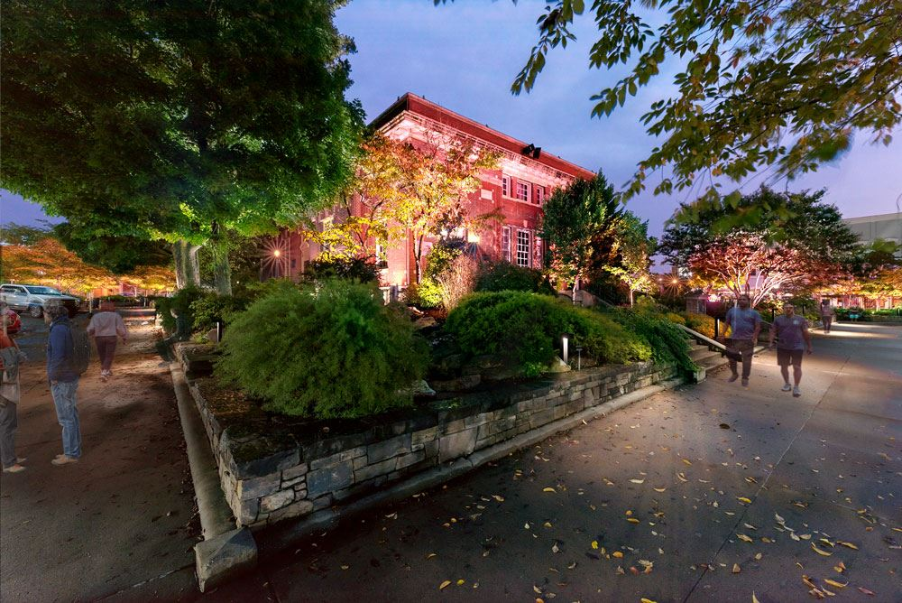

- Founded: 1879 [1]
- County: Carroll County [2]
- Population: 2,073 (2020) [3]
- Area: 6.4 sq mi [2]
Fayetteville
Fayetteville, home to the University of Arkansas, is a lively city nestled in the Ozark Mountains. Enjoy Dickson Street's entertainment, explore the Botanical Garden of the Ozarks, and cheer on the Razorbacks!
Things to Do
- Visit the University of Arkansas
- Explore Dickson Street
- Enjoy the Botanical Garden of the Ozarks
- Cheer on the Razorbacks
History
Fayetteville was founded in 1829 and is home to the University of Arkansas, founded in 1871.
Table
| Population | Area | Founded |
|---|---|---|
| 90,000 | 55.7 mi² | 1829 |
References
- [1]City Of Fayettville